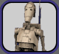
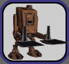
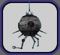
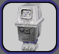
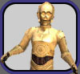
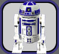
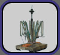

| Droids |
 |
Arakyd Probe Droid
These
droids assist the Bounty Hunter profession to locate which
planet
their target is on. See our Bounty
Hunter page for more information
about droids specific to the BH profession. |
|  |
Battle
Droid
Designed for cheap, large-scale production, B-1 battle droids
made up the army of the Trade Federation and later the Confederacy.
Newly crafted battle droids can hold a total of seven combat
modules and two armor modules. |
|  |
Binary Load Lifter Droid
One
of the oldest droids in existence, the 3-meter-tall binary
load
lifter looks like an undersized Imperial scout walker, stomping
around determinedly on two jointed legs. A lifter's greatest
asset is its strength. These huge droids are able to use one
armor module, advanced versions can hold three non-combat
accessory modules and three armor modules. |
|  |
DZ-70 Droid
These
light combat droids are silver globes with manipulator arms.
These droids are able to use one accessory module (including
combat), and advanced versions of these
droids can hold two accessory modules (including combat) and
two armor modules. |
|
Interplanetary Survey Module Droid
These
disposable droids (generally with 8 charges each) travel
between planets to report on the availability of resources.
The droid requires a survey tool for each survey run that
is consumed with each use. About a half hour later, resource
availability information will be reported
via e-mail (the same information as if the survey tool had
been opened on that planet). |
 |
LE Repair Droid
These
speaking combat-capable droids are able to use two accessory
modules (including combat), an armor module, and a personality
chip; advanced versions can hold three accessory modules (including
combat),
a
personality chip, and an armor module. |
 |
MSE "Mouse" Droid
Small,
boxy wheeled droids that provide courier and minor maintenance
duties. These droids are able to use one accessory module (crafting
station, med/storage/data, detonation, etc.), and advanced
versions can
hold two accessory modules and two armor modules. These droids
give a bonus to detonation power when used with the detonation
module. |
|  |
Power Droid
The
boxy robot is essentially a walking battery, moving about on
two thick, accordion-like legs. Power droids provide power and
mind healing to other droids. These droids are able to use one
accessory module (crafting station, med/storage/data, etc.),
and advanced versions of these droids can hold an accessory
module and an armor module. |
 |
Probot
Probots
are combat droids that are vaguely arachnid in shape, with
a
dark metal finish, bulbous sensor "eyes" and spindly
manipulator arms. These droids are able to use three accessory
modules (including combat) and one armor module, advanced versions
can hold five accessory modules (including combat)
and two armor
modules. |
|  |
Protocol Droid
These
speaking humanoid droids are able to use one accessory module
(crafting
station, med/storage/data, detonation, etc.) and a personality
chip; advanced versions can hold two accessory modules, a personality
chip, and an armor module. |
|  |
R2 Astromech Droid
These
advanced astromech droids are able to use three accessory modules
(including combat) and an armor module,
advanced versions can hold five accessory modules (including
combat) and two armor modules. These droids are also capable
of assisting pilots in certain starships, when equipped with
a data module. |
 |
R3 Astromech Droid
These
highly advanced astromech droids are able to use three accessory
modules (including combat) and an armor
module, advanced versions can hold six accessory modules (including
combat) and
two armor modules. These droids are also capable
of assisting pilots in certain starships, when equipped with
a data module. |
 |
R4 Astromech Droid
These
astromech droids are able to use one accessory module (including
combat), advanced versions can hold
three accessory modules (including combat) and two armor modules.
These droids are also capable of assisting pilots in certain
starships, when equipped with a data module. |
 |
R5 Astromech Droid
These
basic astromech droids are able to use one accessory module
(including combat), advanced versions can hold two accessory
modules (including combat) and an armor
module. These droids are also capable
of assisting pilots in certain starships, when equipped with
a data module. |
 |
Seeker Droid
These
droids assist the Bounty Hunter profession to locate their
target
when on the same planet. See our Bounty
Hunter page for more information about droids specific
to the BH profession. |
 |
Surgical Droid
These
speaking droids are able to use two accessory modules (crafting
station, med/storage/data, etc.) and a personality chip; advanced
versions can hold three accessory modules, a personality chip,
and an armor module. |
|  |
WED Treadwell Droid
A
common utility droid, the WED Treadwell model is characterized
by a flat, treaded base with a spindly neck and cluster of
manipulator
arms and goggle-like photoreceptors mounted atop a telescoping
neck. These droids are able to use one accessory module, advanced
versions can hold two accessory modules and an armor module. |